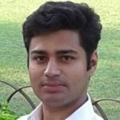

SNEHASIS BANERJEE
Scientist, TCS Research
Guest Faculty, IIIT-G
Sr. Member: IEEE, ACM
Garia, Kolkata, India
|
AI Scientist, Coder, Architect, Innovator, Lecturer, Professional Speaker
Research Interests: Cognitive Robotics, Web Reasoning, Machine Learning, Recommender Systems
Development Interests: Full Stack Development, Python, Java, GraphQL, SPARQL, Matlab, R, C/C++
For employment / internship in TCS Research, send CV to snehasis.banerjee@tcs.com
- Professional Experience:
- Tata Consultancy Services Limited (TCS), Nov 2009 - Current
- Lead Research Scientist at TCS Research, Cognitive Robotics Group (since April 2021)
- Scientist at TCS Research & Innovation, IoT Analytics Group (since July 2017)
- Researcher at Innovation Labs, involved in AI projects (since August 2010)
- Earlier Developer at NSN Germany Web Calypso R&D project
- Atlas Healthcare (Atlas Development Corporation, USA) - Internship - Aug to Oct 2009
- CSE Department at IIIT-G, August 2021 - Current
-
Guest Faculty, Deep Learning CS684 Course for Master of Engineering
Education:
- Jadavpur University (JU), Kolkata [# 1 state university in India, Institute of Eminence recommended]
- ME - Master of Engineering (Software) at Department of IT, 8.55 CGPA, 2015
- Thesis: Stream Reasoning based Recommender System
- Guides: Amit Konar , Utpal Kumar Ray
- Netaji Subhash Engineering College (NSEC), Kolkata [NAAC, NBA]
- B.Tech - Bachelor of Technology in Computer Science & Engineering, 8.49 DGPA, 2009
- South Point High School (SPHS), Kolkata [WB Board, # 1 academic school in India in 2005 ranking]
- [10+2] Higher Secondary Examination in Science, 82.9 % marks, 2005
- [10] Madhyamik Examination, Additional Maths, 89 % marks, 2003
- International Summer Schools: ML 2016, Reasoning Web (RW) in 2013 and 2014
- MA - Master in Philosophy at IGNOU (NAAC A++), 2021 - Current
- Bhushan in Fine Arts - Painting (Pracheen Kala Kendra) (Guide: Prosenjit Acharya)
- * Cognitive Robotics - Planning, Reasoning, Reinforcement Learning, Visual Understanding
- Covid-19 Tracker Mobile App & Cloud Analytics (in likes of Aarogya Setu App, 1st patent holder)
- 1-D Sensor Data Analytics Automation Framework
- Automation of Feature Engineering [ target: ignioTM ]
- Health-care Analytics (with Fortis)
- RIPSAC / TCUPTM - analytics (Winner - Tata Innovista 2014 under Leading Edge category)
- Sensor Explorer and Algorithm Recommender
- Stream Reasoning
- TV Program Recommendation
- * Artificial Consciousness (hobby project)
- codename 'Cetas' ( चेतस् / চেতনা) - Thinking Machine
- codename 'Pranas' - Actuating Machine
- 1st Workshop on Artificial Consciousness - ArtCons (with Yoshua Bengio)
- Sadhguru answers my question - Local can be done by 'Identity': Youtube Link. Addendum: Link
-
Technical Career:
- Winner - ProxiTrak - IoT Innovation of the Year - 2022
- TCS Contextual Master 2022
- Winner - CSI Young IT Professional Award Region-II (2021)
- Award - ICML 2020 Top Reviewer
- Recognition - TCS Invent & Inspire Scientist, 2020
- Recognition - Senior Member, IEEE, 2020
- Recognition - Senior Life Member, CSI (Computer Society of India), 2020
- Award - CSI Best Newsletter Award at CSI 2020 (Designer & Editor of Hardcopy)
- Award - CSI Best National Chapter (Kolkata) at CSI 2020 (serving as Treasurer) - after 17 years
- Award - NeurIPS 2019 registration ($ 750)
- Award - ACM Senior Member, 2019 (Association for Computing Machinery) Link
- Winner - IEEE/ACM ICSE Prize 2019, sponsored by Monash University
- Winning Paper - TCS Global Stylus Paper Contest 2019
- Best Paper - Tactics Analytics Symposium 2015
- TCS internal achievements / leadership trainings - Ascent, IP, Citation, Metamorph etc. (via TCS Gems)
- TCS Inspire Hi-Po Leadership Batch 2017-19. [selected TCS leaders next in succession]
-
Miscellaneous:
- Mensa IQ Test score: 149
- Jadavpur University ME program: 2nd in batch, 2015
- 63 State Rank Scholarship at class 10
- National Talent Search Exam @South Point - A++, 2001
- 19 state rank @ All Bengal Drawing & Painting Contest, 2000
- Talk on "Post Covid Digital Tech" - CSI Regional Convention 2020.
- Tutorial - "ML: Industry Perspective & Applications" at IEEE Tensymp 2020 Link1 Link2
- Talk on "Contact Tracing for Covid19" at CSI Kolkata Office - Evening Lecture Series, May 2020.
- Invited Speaker- IIIT and ITER, Bhubaneswar on topic "AI & ML: Industry Perspective"
- Invited Speaker - DRDO Young Scientist Meet 2019 - representing ACM
- Talk on "Career Guide in age of AI" :CSI West Bengal Student Convention @JIS, Kalyani.
- Talk on "Understanding AI & ML" @AOT, Adisaptagram (24 Oct); BCREC & BCET, Durgapur (25 Oct, '19)
- Talk on "Understanding ML" - 31 Aug, 2019 - Asansol Engineering College
- Talk on "Career Guide: Digital Industry & Beyond" - 20 Aug, 2019 - MAKAUT Govt. of WB, Haringhata
- Talk on "AI: building blocks" 11 Jan, 2019 - NIT Durgapur
- FDP on "Knowledge Representation & Reasoning", Kalyani Govt. Engg. College
- Talk on "Practical Deep Learning" - University of Calcutta
- Talk on "Big Data Analytics" - Techno India Salt Lake, Kolkata
- CSI-KC Lecture Series - "Head Start Web Presence" - 1 Jun 2018 - CSI Kolkata Office, Elgin Road
- ACM Student Chapter Expert Talk & Hands-On: "Science of Data" - 4 May 2018 - TICT, Kolkata
- Talk on "AI: A philosophical and practical perspective" - 17 Apr 2018 - BIT, Mesra
- Talk and Hands-On in Data Science with R Workshop - 23 Mar 2018 - GCECT, Kolkata (under TEQIP III)
- ACM Student Chapter Expert Talk on Machine Intelligence 27 Feb 2018 - Techno India Salt Lake, Kolkata
- Intelligent Computing Seminar - Talk on AI - 16 Jan 2018 - DSEC, Kolkata
- Tutorial on IoT Analytics at EAIT 2018 conference [TICT and IIEST Shibpur] 19 Jan 2018.
- Faculty Interaction Program @ Kalyani Government Engineering College, West Bengal - 15 Dec 2016 - "Diving Deep into Learning" - teaching faculty theory, open problems and future guidance
- Faculty Development Program (FDP) @ CV Raman College of Engineering, Bhubaneswar - 16 July 2016 - "Applications of Machine Learning with Deep Learning" - teaching faculty theory and hands-on of ML/DL
- National E-Summit 2014, Kalyani, India - Lecture on "Employability Skills" - JIS Engineering College
- CIKM 2013, San Francisco, USA - workshop Web-KR "Web scale stream reasoning: Challenges and Future Directions"
- Professional Memberships: Sr. Member of ACM, IEEE, CSI; Life member of ISCA, IETE.
- Program Committee (Reviewer):- ICLR, ICML, NeurIPS, ICRA, WACV, IROS, CASE, KDAH (CIKM workshop), SMC, IEEE Retis, ICCIDM , ICSNCS, EAIT,
ParLearning (IEEE IPDPS workshop), ICACCI , ANTS, IEEE ISED, Springer ICAC, AIoTAS, IEEE BigData, IoTBB, ACM Compute.
- Program Co-chair: IEEE TENSYMP 2019 Machine Learning Track
- Manuscript Reviewer of Manning Books
- Member of Panel of Times Higher Education Ranking of World Universities since 2016
- Member of Software and Systems Engg. Committee, ISO/IEC/JTC1/SC7 NASSCOM [India's representative]
- Member of IEEE Working Group for Industrial Robotics Safety
- Member of ACM Global Practitioner Advisory Community [the global group of 100 computing professionals] Link
- Web Admin of ACM Kolkata and Hon. Treasurer, ACM Kolkata Chapter (term 2021 - ). Ex-Hon. Secretary.
- Ex-Web Admin (2018-20), Ex-News Letter Editor (2018-20) & Ex-Treasurer of CSI Kolkata Chapter (2019 - 20)
- Digital Impact Square Hackathon 2016, Mumbai / Nashik - Ideathon Jury and Tech Mentor in AI and Web Dev
- Industrial Jury, ACM Kolkata Project Award, East & North-East Region, India Link
- Industry Jury, IEEE RO-MAN 2019 @ Socialis Impremiere - Robotics in the Social Context Link
- Jury, 1st National Hackathon on Self-Reliance Based Intelligent India Hackathon (CSI SRIIH) Link
- Star Moderator & Technology Expert - TCS Campus Commune Artificial Intelligence Channel
- Lead, CSPathsala (West Bengal) initiative backed by TCS, ACM and Google - Link
- Listed as Resource Person in AI - CSI Region 2 (India East) - Link
Organizing / jury / mentor :-
- CSI EAIT 2020 - organizer
- CSI ICCA 2021 - organizer
- CSI SRIH 2020 - organizer & jury
- ACM India East Hackathon - HackADay - mentor
- CSI Region 2 (India East) Student Convention 2019 - jury
- IEEE Ro-MAN 2019 competition, Le Meridian, New Delhi - jury
- ACM CODS COMAD 2019 @Swiss Hotel - organizer and host
- ACM B.Tech Project Award India East & North-East @CU - Jury
- CSI 2017 Annual Event, Kolkata @CU and Science City - organizer and host
- ACM India Annual Event 2017, Calcutta University & Amity University, Kolkata - organizer
- Digital Impact Square Hackathon 2016 [organized by Hasit Kaji, VP, TCS] - Jury and Mentor
- CSI 2012 Annual Event, Science City, Kolkata [ representing TCS ] - organizer
- Object Goal Navigation using Spatial Graph and Trajectory History (2022)
- Task Ambiguity resolution in cognitive robotics (2021)
- Ontology guided semantic scene understanding for indoor service robots (2021)
- A Teledrive System based on Smart Cognitive Navigation (2021)
- Graph Analytics for Contact Tracing in Pandemics (2020)
- Real-time Enterprise System for Contagion Contact Tracing (2020)
- Safe and Reliable Task Planning (2020)
- Smart Telepresence System based on Semantics (2020)
- System and Method to Utilize Domain Knowledge to Automatically identify Solution to a Problem (2019)
- System and Method for extending Reasoning capability for Data Analytics in IoT Platform (2018) $
- Automation of Advanced Sensor Analytics for IoT platform (2018) &
- System and Method for obtaining optimal mother wavelets for facilitating machine learning tasks (2017)
- Signal Analysis Systems and Methods for Features Extraction and Interpretation Thereof (2017) $ &
- System and Method for Signal Analysis (2017) & $
- Method and System For Recommending Features For Developing an IoT Application (2016) $
- Systems And Methods For Time-Frequency Analysis Of PCG For Classifying Heart Disease (2016) $
- System and Method for Coronary Artery Disease detection using PPG (2016) $
- System and Method for Sensor Search (2014) $
- System and Method for executing SPARQL query (2014) Link $
- Notifying a User Subscribed to Multiple Software Applications (2013) Link $
- System and Method for Window Management for Stream Processing and Stream Reasoning (2013) Link $
- System and Method for Smart Public Alerts and Notifications (2013) $ Link
- A System & Method for Reasoning & Running Continuous Queries Over Streams of Facts (2012) $ Link
- A Context-Aware Recommender Considering User Preferences and Learnt Behavior (2011) $ Link
- System and Method for Demographic Analytics based on Multi-modal Information (2011) @ $ * & #
- Pramanick, P. Banerjee. S, et al. Talk-to-Resolve: Combining scene understanding and spatial dialogue to resolve granular task ambiguity for a collocated robot. Elsevier RAS 2022.
- Snehasis Banerjee et. al. Teledrive: An Embodied AI based Telepresence System (submitted IJSR 2022)
- N Gireesh, DASK, Snehasis Banerjee, et. al. Object Goal Navigation using Data Regularized Q-Learning (submitted CASE 2022)
- DASK, Kritika Anand, CK, Gushan Kumar, NG, Snehasis Banerjee, et. al. Spatial Relation Graph and Graph Convolutional Network for Object Goal Navigation (submitted CASE 2022)
- Snehasis Banerjee et. al. Teledrive: A Humane Telepresence System with Cognitive Navigation, HBCR workshop, IROS 2021.
- Bhattacharyya, A; Sau, A; Roychowdhury, R; Banerjee, S. et. al. Teledrive : An Intelligent Telepresence Solution for 'Collaborative Multi-presence' through a Telerobot. COMSNETS 2022.
- Snehasis Banerjee et. al. OntoScene: Ontology Guided Indoor Scene Understanding for Cognitive Robotic Tasks, ISWC 2021
- Snehasis Banerjee. Cognitive Robotics: Research Questions. CSI Comm. Oct '20. Pg. 33. Link
- Snehasis Banerjee et. al. SemNav: How Rich Semantic Knowledge Can Guide Robot Navigation in Indoor Spaces. ISWC 2020. Link
- Snehasis Banerjee. Graph Analytics on Human Proximity Data to Fight Contagion. KDAH, CIKM 2020.
- V Chandel, Snehasis Banerjee et. al. ProxiTrak: A Robust Solution To Enforce Real-Time Social Distancing & Contact Tracing In Enterprise Scenario. CPD Workshop, UbiComp 2020.
- Snehasis Banerjee. Towards Safe & Reliable Task Planning. AISafety Workshop, IJCAI 2020. Ceur-WS
- Snehasis Banerjee et. al. ProxiTrak - A Smart Contact Tracing System to Fight Covid-19. EMBC 2020. Link
- Snehasis Banerjee. Semantic Web Meets Cognitive Robotics. CSI Comm. May '20. Pg. 33. Link
- Snehasis Banerjee. Robotic Motion Planning. CSI Communications. April '20. Pg. 28. Link
- Snehasis Banerjee et. al. A Wide Learning Approach for Interpretable Feature Recommendation for 1-D Sensor Data in IoT Analytics. International Journal of Automation and Computing. Springer Nature IJAC. 2019. Citescore: 2.34. IJAC Springer1 Springer2
- Snehasis Banerjee et. al. A Software framework for Procedural Knowledge based Collaborative Data Analytics for IoT. ACM IEEE ICSE Workshop 2019. Montreal, Canada. ICSE
- Snehasis Banerjee, An Architecture and Method for Exploiting Domain Knowledge to enable MFDM, TCS Stylus Paper Contest 2019. [Winning Paper]
- Snehasis Banerjee et. al. Interpretable Feature Recommendation for Signal Analytics, CIKM IDM 2017. Singapore.
- Snehasis Banerjee et. al. Automation of Feature Engineering for IoT Analytics. ACM SIGBED Review 2018. In Proc. of AIoTAS, ISCA Workshop, Toronto, Canada, 2017. ACM
- Snehasis Banerjee et. al. Towards Wide Learning: Experiments in Healthcare. In Proc. of Machine Learning for Health Workshop, NIPS 2016. Barcelona, Spain. arXiv
- Rohan Banerjee, Swagata Biswas, Snehasis Banerjee, et al. Time-Frequency Analysis of Phonocardiogram for Classifying Heart Disease, CinC 2016. [MIT Physionet 2016 Challenge paper] Link
- Sinharay, Arijit; Pal, Arpan; Banerjee, Snehasis; et al. A Novel Approach to Unify Robotics, Sensors, and Cloud Computing through IoT for a Smarter Healthcare Solution for Routine Checks and Fighting Epidemics. Concept Paper. HealthyIoT @ IoT 360, Rome, Italy, 2015.
- T Chattopadhyay, S Banerjee et al. Way to make ourselves redundant: A Semantic Framework for Automated Workflow Generation for IoT. TCS Tactics Analytics Symposium 2015 [Best Paper]
- Snehasis Banerjee, Abhisekh Mishra and Ranjan Dasgupta. Semantic Exploration of Sensor Data. In the Proceedings of Web-KR (CIKM Workshop). 2014. Shanghai, China. ACM
- Snehasis Banerjee and Debnath Mukherjee. On Demand SPARQL Extension: a Case Study of extending Geo-SPARQL for Sensor Data Exploration in Semantic Cities. In Proceedings of AAAI (Workshop on Semantic Cities) , 2014, Quebec, Canada. AAAI
- Snehasis Banerjee and Debnath Mukherjee. Towards a Universal Notification System. In Proceedings of IEEE/WIC/ACM International Conference on Web Intelligence. 2013, Atlanta, Georgia, USA. IEEE
- Snehasis Banerjee and Debnath Mukherjee.Windowing Mechanisms for Web Scale Stream Reasoning. In the Proceedings of Web-KR (CIKM Workshop). 2013. San Francisco, USA. ACM
- Mukherjee, D., Banerjee, S., & Misra, P. 2013. Towards Efficient Stream Reasoning. OTM 2013 Workshops ODBASE (pp. 735-738). Graz, Austria. Springer
- Snehasis Banerjee, Debnath Mukherjee and Prateep Misra. 2013. What Affects Me? A Smart Public Alert System based on Stream Reasoning. In Proceedings of ACM ICUIMC (IMCOM) 2013. Jan 17-19. Kota Kinabalu, Malaysia. ACM TCS
- Debnath Mukherjee, Snehasis Banerjee, and Prateep Misra. 2012. Ad-hoc ride sharing application using continuous SPARQL queries. In Proc. WWW '12 Comp. Lyon, France. pp. 579-580. ACM WWW
- Snehasis Banerjee, Plaban K. Bhowmick, Debnath Mukerjee, and Prateep Misra. 2012. Experiments on Synopsis-based TV Program Recommendation. CATA Conference. Las Vegas, USA. 2012. Proc
- Mukherjee, D.; Banerjee, S.; Bhattacharya, S.; Misra, P.; , "A context-aware recommendation system considering both user preferences and learned behavior," International CITA '11, 2011 7th Conference on , vol., no., pp.1-7, 12-13 July 2011. Kuching, Malaysia. IEEE
- Global Blockchain Congress @Biswa Bangla Convention, Kolkata - invited delegate
- CMMI Workshop 2018 @Webel Bhavan, Kolkata - invited delegate
- Embedded Systems Knowledge Workshop 2018 @Biswa Bangla Convention, Kolkata - invited delegate
- Data Science Summit 2018 @India Habitat Center, Delhi - invited guest
- CSI Annual Convention 2018 - attendee
- ACM Annual Event Conference 2017, Kolkata - attendee - met 2010's Turing Award winner
- Workshop on Data Mining and Machine Learning 2016 - Indian Statistical Institute, Kolkata - attendee
- Machine Learning Summer School 2016, University San Pablo, Arequipa, Peru - selected as student
- Machine Intelligence Annual Workshop 2016, Indian Statistical Institute, Kolkata - attendee
- ACM Annual Event Conference 2016, Trivandrum - attendee - met father of expert systems
- ICSMB Conference 2016 @IIT KGP, Kharagpur 2015 - attendee
- EAIT Conference Tutorial, 2015, Kolkata - attendee
- 5-day course on Data Mining @IITKGP, 2015, Salt Lake Campus, Kolkata - attendee
- 2-day Deep Learning Course @IIT-KGP 2015, Kharagpur - attendee
- 2-day Big Data Workshop @ISI 2015, Kolkata - attendee
- Research Methodology, CSI Workshop 2015, Kolkata - attendee
- CIKM 2014, Shanghai, China - workshop Web-KR paper presenter and attendee
- RW-RR 2014, Athens, Greece - poster presenter and attendee
- AAAI 2014, Quebec, Canada - workshop Semantic Cities - paper presenter and attendee
- IEEE/CSI Cybernetics Workshop 2014 - workshop at Indian Statistical Institute, Kolkata - attendee
- ACM Text Mining Workshop 2014 - workshop at Indian Statistical Institute, Kolkata - attendee
- Web Intelligence 2013, Atlanta, USA - poster presenter and attendee
- CIKM 2013, San Francisco, USA - workshop Web-KR paper presenter, panelist and attendee
- Reasoning Web Summer School 2013, University of Mannheim, Germany
- IEEE Technical Lectures on Big Data Analytics 2013, Electrical Engg. Dept, Jadavpur University, Kolkata
- IEEE Ubiquitous Cloud Computing Workshop 2013, SMC, Jadavpur University, Kolkata
- Tactics Analytics Symposium 2013, India Habitat Center, New Delhi - participant at this TCS event
- ACM ICUIMC 2013, Kota Kinabalu, Malaysia - conference paper presenter and attendee
- Workshop on Machine Learning 2012, Indian Statistical Institute, Kolkata
- CATA 2012, Las Vegas, USA - conference paper presenter and attendee
- Tactics Telecom Symposium 2012, TCS, Kolkata - participant at this TCS event
- CITA 2011, Kuching, Malaysia - conference paper presenter and attendee - 1st paper and conference
- Workshop on Information Retrieval 2011, St Xavier's College, Kolkata - participant
- Softcomp 2008 - Workshop on Soft Computing held at Netaji Subhash Engineering College, Kolkata - I was a student participant; this was my first exposure to machine learning
Interviews: | Silicon India (2014) | Medium (2019) |
Personal Interets: Consciousness, Traveling, Sci-Fi Movies, Lecturing, Music, Writing.
My daughter Tanisha Banerjee is cute and consistent topper of South Point School, studying in class 1. 1
My wife Moumita Banerjee (Bsc. Hons.) is a professional makeup artist and owner of the HUF family business. 1 2
|